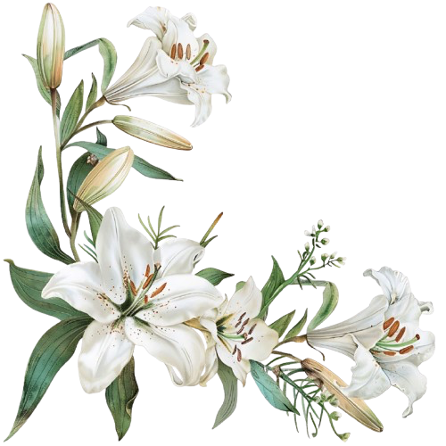
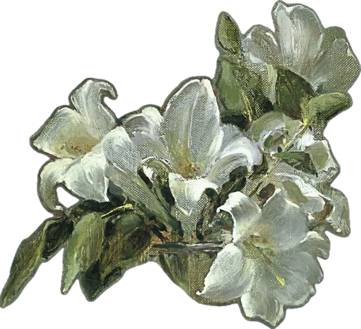
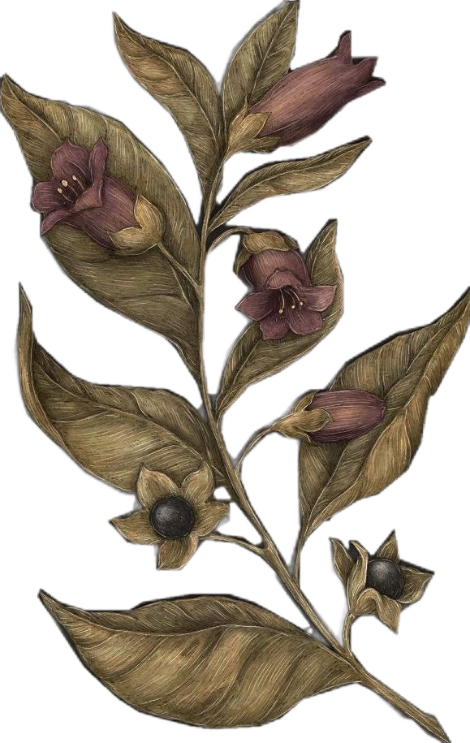

❖ ⚜ ✠ ⚜ ❖
✠
IN TREMORE ET PROFUNDA SUBMISSIONE • TABERNACULUM ANIMÆ
MYSTERIUM TREMENDUM
«Свѣту положены предѣлы; въ безсрочномъ, въ безпредѣльномъ ночь царитъ.
Сонъ длится вѣчно. Сонъ святой, не обездоливай надолго причастныхъ
ночи въ тягостяхъ земного дня.»
🜚 🜂 🜄 🜁 🜃 🜚



ПОДНОЖIЕ РАБЫНИ • ВЕЛИКАЯ ГОСПОЖА • ОКТЯБРЬ 1916